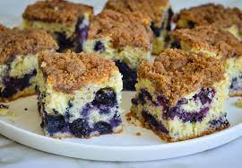

Blue Berry Coffee

Description
A simple coffee cake studded with blueberries and topped with a crunchy pecan streusel.
Ingredients
- 0.5 cup butter
- 0.75 cup white sugar
- 1 egg
- 0.5 cup milk
- 2 cups all-purpose flour
- 2 teaspoon baking powder
- 0.5 teaspoon salt
- 2 cups blueberries
- 0.5 cup brown sugar
- 1 teaspoon ground cinnamon
- 0.5 cup chopped pecans
- 3 tablespoon butter
Steps
-
Preheat oven to 375 degrees F (190 degrees C). Grease and flour a 9 inch springform pan. Sift together the flour, baking powder and salt. Set aside.
-
In a large bowl, cream together the butter and sugar until light and fluffy. Beat in the egg. Beat in the flour mixture alternately with the milk, mixing just until incorporated. Stir in the blueberries. Pour batter into prepared pan. In a small bowl, combine brown sugar, 3 tablespoons flour, cinnamon and chopped pecans. Cut in butter until crumbly. Sprinkle over the batter.
-
Bake in the preheated oven for 40 to 45 minutes, or until a toothpick inserted into the center of the cake comes out clean. Allow to cool.